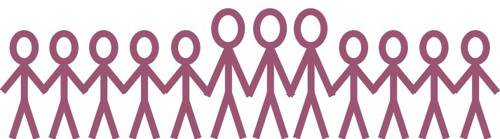

|
 |
|
We are the teachers and students on grade 9th class 6th of Hsien-Hsi junior high school in Changhua. We are glad to finish this project. Through this activity, we know our hometown more. Furthermore, we hope more people visit Hsien-Hsi. When people appreciate the natural beauty, we hope everyone can do his best to protect our natural resources.
|
|
Hi, Guys! Because I was busy for many evens, I just could assist you little. I was sorry for this. However, it was lucky that I could help to analyze the documents. Finally, I wanted to say ¡§ thank you for your help!¡¨ |
Through this project, I knew our hometown more. Although we faced many problems, we conquered each. When we saw our web was finished, we were very happy. In addition, it was fun that we could visit many places of interest and play with other members when we produced our project. |
Through this project, I know more and learn more. At the beginning, I didn¡¦t understand how to do. However, I got the skills gradually. Although we faced some problems during producing this project, we all did our best to conquer each problem and finish it. No matter the result will be good or not, it is worth that we ever contribute ourselves to this project. |
|
I thought that we learned more knowledge by participating in this project. At the beginning, I joined this activity because I thought it was fun. As a result, ¡§fun¡¨ couldn¡¦t deal with the problems. Although the thought of giving up sometimes came to my mind, it was lucky that I did not quit. Otherwise, I would lose the chance to finish this project. |
I thought it was interesting to participate in this project. Although visiting, interviewing, analyzing, writing reports and discuss was tired, this experience was one kind of ¡§sweet duty.¡¨ Doing this project is my will. |
During producing this project, I learned many things and improved my knowledge of computer. Through interviewing, I realized that many people gave their love to Hsien-Hsi. Most important, I knew my hometown more. |
|
It was a good decision to join this project. Although it was difficult to start, the instruction of our teachers gave us more confidence to keep going. Then we found that finishing this project was not so difficult. I felt a little happy because we learned and got from this activity. |
I though it was worth and meaningful to produce this project because I learned many things. I know more places of interest in Hsien-Hsi now; therefore, I can visit more attractive some day. |
Through this project, I learn many things about environment. I also know my hometown more and begin to care about our society. Furthermore, my knowledge is more rich that before. |
|
A series of interviewings is a series of surprise and touching. I also learn to observe the people and things in different ways. I hope my students can pay more feelings and attentions on Hsien-Hsi through this project. In addition, I also hope this project is a beginning and more seeds of hope can grow up in Hsien-Hsi. |
Hsien-Hsi is the place where I have grown up since my childhood. Owing to this project, I was surprised that I was not familiar with my hometown. Through discussing with the students, I was impressed with the efforts of the students and the natives. Besides, this experience also became my good memory in my teaching life. |
I know Hsien-Hsi more by finishing the project. Maybe more people will visit here some day because of our introductions. And I will welcome their visiting sincerely on that day. |
|
|
|